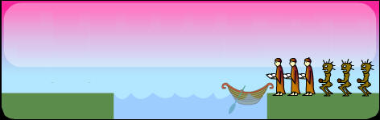
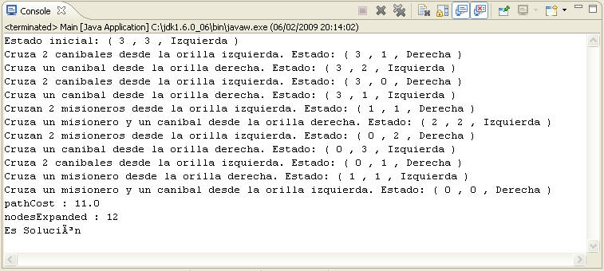
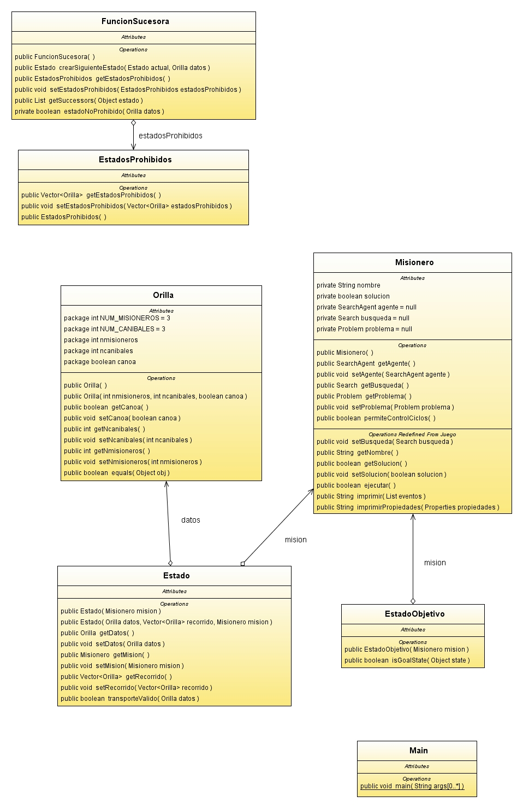

| Misioneros vs. Caníbales |
Debemos pasar 3 caníbales y 3 misioneros de una orilla del río a la otra, mediante una barca que sólo tiene 2 plazas para ser ocupadas, teniendo en cuenta que hay que evitar que el/los caníbal/es devore a un/los misionero/s. En cada estado se debe conocer la posición de cada uno de los 7 elementos, siendo el 7º elemento la barca, la cual no puede moverse vacía, por lo que cada estado estará representado como una tupla de 3 elementos que indican la cantidad de misioneros existentes en la orilla inicial, la cantidad de caníbales en dicha orilla y la posición de la barca, pudiendo ser el lado izquierdo o derecho del río. 
Todos los operadores suponen como requisito que la barca este ocupada para poder moverse de una orilla a la otra.
Algoritmo DepthLimitedSearch o Profundidad limitada: Basada en la búsqueda primero en profundidad, pero fijando un límite l de profundidad, para evitar descender infinitamente. Éste límite permite desechar caminos en los que el estado objetivo es muy lejano del nodo inicial. En este caso, el límite de profundidad es 11. Se utiliza un algoritmo de búsqueda desinformada, evitando así la necesidad de implementar una función heurística y ampliando la variedad de los algoritmos que se usen. Profundidad limitada permite obtener una solución siempre que se establezca un límite de profundidad suficiente para realizar el mínimo número de transportes necesarios para conseguir el objetivo del juego, en este caso, el límite de profundidad es 11, esto implica que la solución encontrada tendrá 11 movimientos aunque no se asegura, mediante el algoritmo, que hayan caminos más cortos, pero habiendo probado diferentes límites, incluso limites inferiores se demuestra que el camino más corto y por tanto se genera, aunque no a través de la propia búsqueda, la optimización de la solución 
Estado( Número de misioneros en la orilla
izquierda, Número de caníbales en la orilla izquierda, Posición de
la barca ) Basta con conocer el número de misioneros y el número de caníbales en una de las orillas, ya sea la orilla final o final, ya que se puede obtener tanto el número de misioneros como de caníbales en la otra orilla, mediante operaciones aritméticas e incluyendo como datos el operador que se ejecute en cada paso, ya que éste aporta información debido a que en ningún caso puede existir un movimiento de la barca, entre orilla y orilla, vacía. Por tanto, al tratarse de un espacio de estados bastante extenso debido al gran numero de variedades que se pueden generar mediante el uso de los distintos operadores ( 8 ), se crea una representación con la información mínima y ampliable a través de operaciones aritméticas.
Estados inalcanzables: Estado inicial: Estado final: |
| Diagrama UML |
A continuacion se expone el diagrama uml de este juego para aportar informacion adicional sobre su implementacion.  |